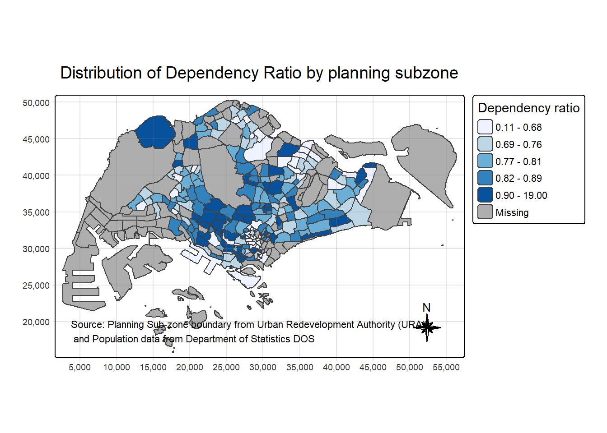
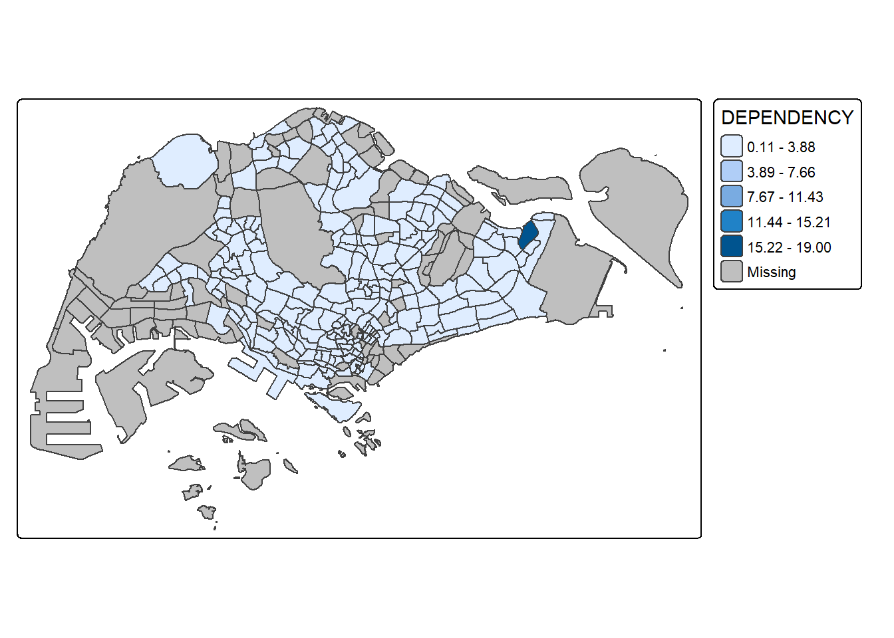
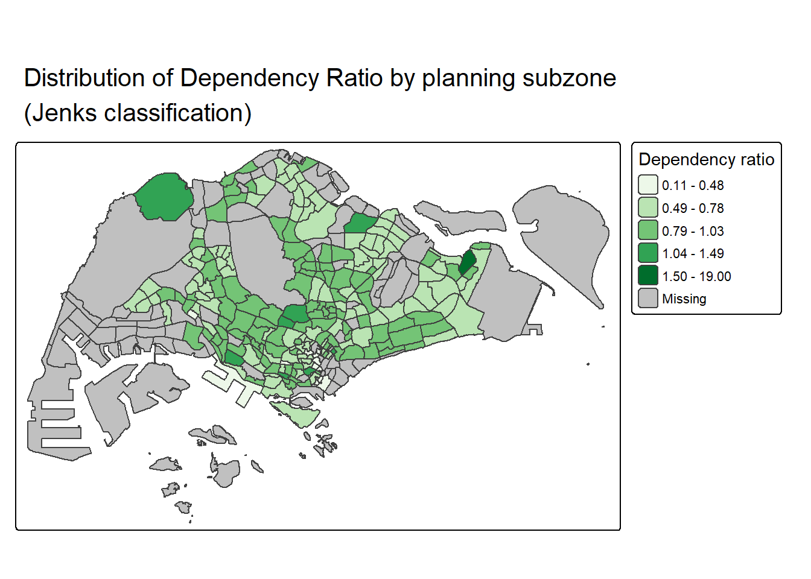
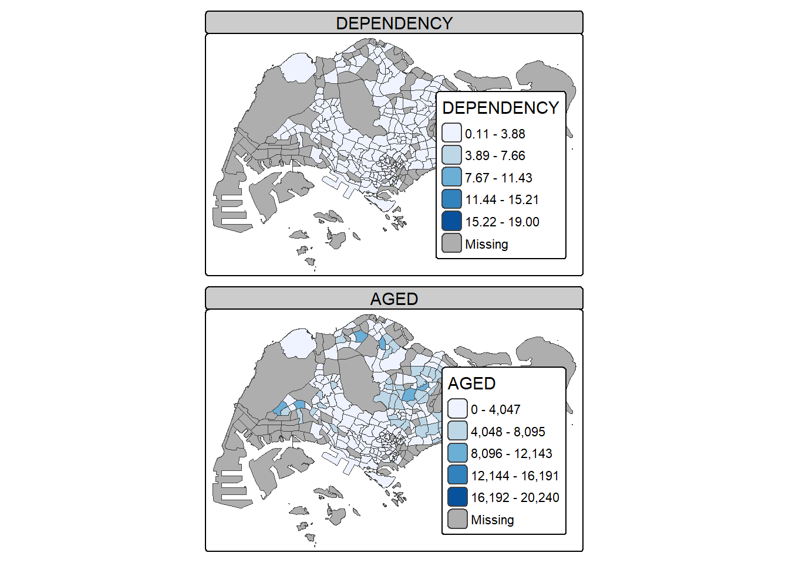
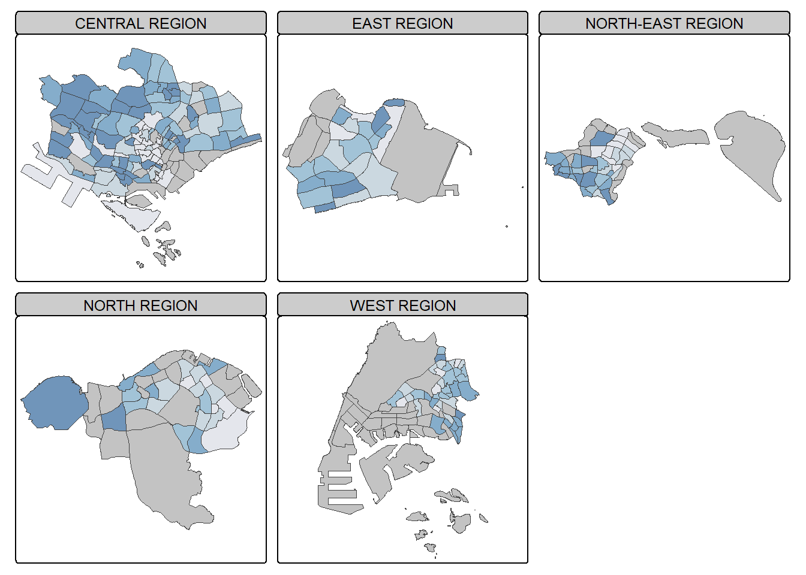
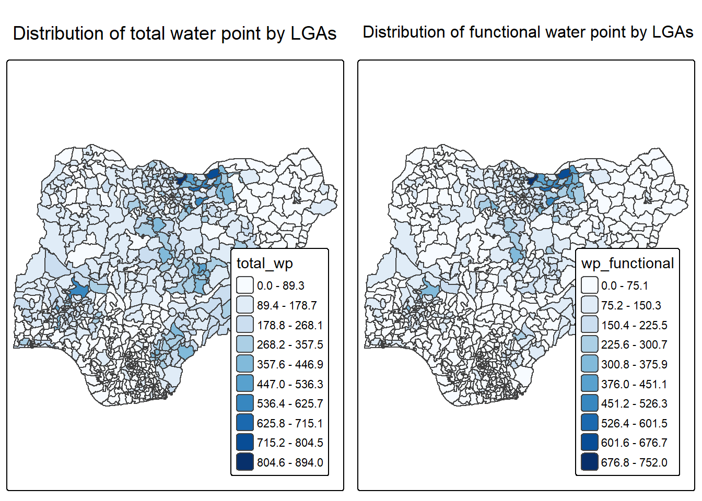
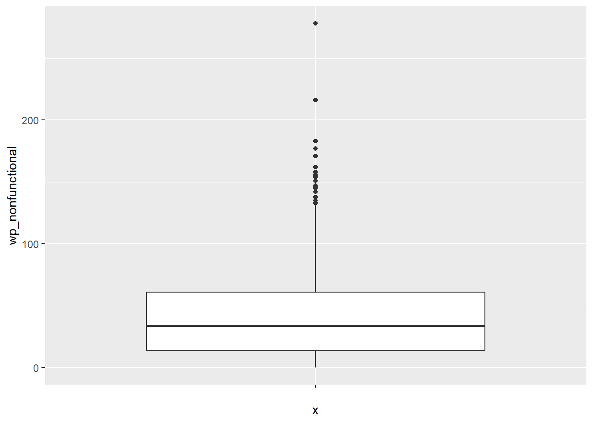

Show the code
pacman::p_load(sf, tmap, tidyverse)This exercise pulls together three related strands of geospatial visualisation, all built on the tmap package. I work through them in an order that made sense to me as I learned:
The thread connecting all three is the same tm_shape() + layer grammar, so once I understood the building blocks in the first part, the rest came together quickly.
The core package for this whole exercise is tmap. Around it I need sf for handling geospatial data and tidyverse for importing, tidying and wrangling. I load everything with pacman::p_load() so that any missing package is installed first.
pacman::p_load(sf, tmap, tidyverse)I do not install readr, tidyr and dplyr separately because all three are already part of tidyverse. Loading the meta-package gives me read_csv(), pivot_wider(), mutate(), filter(), group_by() and select() in one go.
I use two datasets to build the Singapore choropleth map:
PA and SZ fields let me geocode it onto the shapefile.I use st_read() from sf to read the shapefile into a simple feature data frame called mpsz. The dsn argument points to the folder and layer names the shapefile (without extension).
mpsz <- st_read(dsn = "data/MP14_SUBZONE_WEB_PL",
layer = "MP14_SUBZONE_WEB_PL")Reading layer `MP14_SUBZONE_WEB_PL' from data source
`D:\mengtingyu88\ggplot-coursework\ggplot-coursework\Hands-on_Ex\Hands-on_Ex08\data\MP14_SUBZONE_WEB_PL'
using driver `ESRI Shapefile'
Simple feature collection with 323 features and 15 fields
Geometry type: MULTIPOLYGON
Dimension: XY
Bounding box: xmin: 2667.538 ymin: 15748.72 xmax: 56396.44 ymax: 50256.33
Projected CRS: SVY21I inspect the object to confirm it imported as a MULTIPOLYGON feature collection with 323 features projected in SVY21.
mpszSimple feature collection with 323 features and 15 fields
Geometry type: MULTIPOLYGON
Dimension: XY
Bounding box: xmin: 2667.538 ymin: 15748.72 xmax: 56396.44 ymax: 50256.33
Projected CRS: SVY21
First 10 features:
OBJECTID SUBZONE_NO SUBZONE_N SUBZONE_C CA_IND PLN_AREA_N
1 1 1 MARINA SOUTH MSSZ01 Y MARINA SOUTH
2 2 1 PEARL'S HILL OTSZ01 Y OUTRAM
3 3 3 BOAT QUAY SRSZ03 Y SINGAPORE RIVER
4 4 8 HENDERSON HILL BMSZ08 N BUKIT MERAH
5 5 3 REDHILL BMSZ03 N BUKIT MERAH
6 6 7 ALEXANDRA HILL BMSZ07 N BUKIT MERAH
7 7 9 BUKIT HO SWEE BMSZ09 N BUKIT MERAH
8 8 2 CLARKE QUAY SRSZ02 Y SINGAPORE RIVER
9 9 13 PASIR PANJANG 1 QTSZ13 N QUEENSTOWN
10 10 7 QUEENSWAY QTSZ07 N QUEENSTOWN
PLN_AREA_C REGION_N REGION_C INC_CRC FMEL_UPD_D X_ADDR
1 MS CENTRAL REGION CR 5ED7EB253F99252E 2014-12-05 31595.84
2 OT CENTRAL REGION CR 8C7149B9EB32EEFC 2014-12-05 28679.06
3 SR CENTRAL REGION CR C35FEFF02B13E0E5 2014-12-05 29654.96
4 BM CENTRAL REGION CR 3775D82C5DDBEFBD 2014-12-05 26782.83
5 BM CENTRAL REGION CR 85D9ABEF0A40678F 2014-12-05 26201.96
6 BM CENTRAL REGION CR 9D286521EF5E3B59 2014-12-05 25358.82
7 BM CENTRAL REGION CR 7839A8577144EFE2 2014-12-05 27680.06
8 SR CENTRAL REGION CR 48661DC0FBA09F7A 2014-12-05 29253.21
9 QT CENTRAL REGION CR 1F721290C421BFAB 2014-12-05 22077.34
10 QT CENTRAL REGION CR 3580D2AFFBEE914C 2014-12-05 24168.31
Y_ADDR SHAPE_Leng SHAPE_Area geometry
1 29220.19 5267.381 1630379.3 MULTIPOLYGON (((31495.56 30...
2 29782.05 3506.107 559816.2 MULTIPOLYGON (((29092.28 30...
3 29974.66 1740.926 160807.5 MULTIPOLYGON (((29932.33 29...
4 29933.77 3313.625 595428.9 MULTIPOLYGON (((27131.28 30...
5 30005.70 2825.594 387429.4 MULTIPOLYGON (((26451.03 30...
6 29991.38 4428.913 1030378.8 MULTIPOLYGON (((25899.7 297...
7 30230.86 3275.312 551732.0 MULTIPOLYGON (((27746.95 30...
8 30222.86 2208.619 290184.7 MULTIPOLYGON (((29351.26 29...
9 29893.78 6571.323 1084792.3 MULTIPOLYGON (((20996.49 30...
10 30104.18 3454.239 631644.3 MULTIPOLYGON (((24472.11 29...sf data frames print only the first ten features by design, the same way a tibble truncates its rows. The full 323 features are still there, the console is just keeping the output readable.
Next I read the aspatial population table with read_csv() and store it as popdata.
popdata <- read_csv("data/respopagesextod2011to2020.csv")Before mapping, I need a clean table holding only the 2020 values, with the derived fields the assignment asks for:
I filter to 2020, sum the population by planning area, subzone and age group, then pivot the age groups into columns so each age band becomes its own field. After that I use rowSums() over the right column ranges to build the four aggregates and the dependency ratio.
popdata2020 <- popdata %>%
filter(Time == 2020) %>%
group_by(PA, SZ, AG) %>%
summarise(`POP` = sum(`Pop`)) %>%
ungroup() %>%
pivot_wider(names_from = AG,
values_from = POP) %>%
mutate(YOUNG = rowSums(.[3:6])
+ rowSums(.[12])) %>%
mutate(`ECONOMY ACTIVE` = rowSums(.[7:11]) +
rowSums(.[13:15])) %>%
mutate(`AGED` = rowSums(.[16:21])) %>%
mutate(`TOTAL` = rowSums(.[3:21])) %>%
mutate(`DEPENDENCY` = (`YOUNG` + `AGED`)
/ `ECONOMY ACTIVE`) %>%
select(`PA`, `SZ`, `YOUNG`,
`ECONOMY ACTIVE`, `AGED`,
`TOTAL`, `DEPENDENCY`)The rowSums(.[3:6]) style depends on the exact column positions produced by pivot_wider(). If the age group labels ever sort differently, those index ranges would silently grab the wrong columns. I kept the pivot output and the index ranges side by side and checked the column names before trusting the totals.
There is one catch before the join: the PA and SZ values in the population table are a mix of upper and lower case, while SUBZONE_N and PLN_AREA_N in the shapefile are all uppercase. So I convert PA and SZ to uppercase first, and drop any rows with no economy active population.
popdata2020 <- popdata2020 %>%
mutate(across(c(PA, SZ), toupper)) %>%
filter(`ECONOMY ACTIVE` > 0)Now I join with left_join(), keeping mpsz on the left so the result stays an sf data frame. The common key is SUBZONE_N on the geospatial side and SZ on the attribute side.
mpsz_pop2020 <- left_join(mpsz, popdata2020,
by = c("SUBZONE_N" = "SZ"))left_join() keeps the class of its first argument. By putting the sf data frame mpsz first, the geometry column is preserved and the output remains mappable. If I had joined the other way round, I would have gotten a plain tibble with no geometry.
I save the joined object so I do not have to rebuild it every time.
write_rds(mpsz_pop2020, "data/mpszpop2020.rds")The fastest way to draw a choropleth in tmap is qtm(). I switch to static plotting mode and map the DEPENDENCY field.
tmap_mode("plot")
qtm(mpsz_pop2020,
fill = "DEPENDENCY")
qtm() is perfect for a quick look while I am still exploring. The cost is control: it is hard to tune the legend, classification or furniture of individual layers. The moment I want a presentation-quality map, I switch to the full tm_shape() grammar below.
The grammar always starts with tm_shape() to declare the data, followed by one or more layers. Here is the full cartographic version I am aiming for, with classification, legend, title, borders, compass, grid and a source credit.
tm_shape(mpsz_pop2020) +
tm_polygons(fill = "DEPENDENCY",
fill.scale = tm_scale_intervals(
style = "quantile",
n = 5,
values = "brewer.blues"),
fill.legend = tm_legend(
title = "Dependency ratio")) +
tm_title("Distribution of Dependency Ratio by planning subzone") +
tm_layout(frame = TRUE) +
tm_borders(fill_alpha = 0.5) +
tm_compass(type = "8star", size = 2) +
tm_grid(alpha = 0.2) +
tm_credits("Source: Planning Sub-zone boundary from Urban Redevelopment Authority (URA)\n and Population data from Department of Statistics DOS",
position = c("left", "bottom"))
The simplest possible map is tm_shape() plus tm_polygons() with no variable. This just draws the subzone outlines.
tm_shape(mpsz_pop2020) +
tm_polygons()
To shade by a variable, I pass the field name straight to tm_polygons().
tm_shape(mpsz_pop2020) +
tm_polygons("DEPENDENCY")
A few defaults worth remembering: the default binning style is "pretty", the default palette is YlOrRd, and missing values are shaded grey.
tm_polygons() is really a wrapper around tm_fill() (which colours the polygons) and tm_borders() (which draws the outlines). Using tm_fill() alone gives shading with no boundary lines.
tm_shape(mpsz_pop2020) +
tm_fill("DEPENDENCY")
Adding tm_borders() puts the subzone boundaries back. The fill_alpha controls transparency from 0 (fully transparent) to 1 (opaque), and I can also set col, lwd and lty.
tm_shape(mpsz_pop2020) +
tm_polygons(fill = "DEPENDENCY") +
tm_borders(lwd = 0.01,
fill_alpha = 0.1)
Understanding that tm_polygons = tm_fill + tm_borders was the unlock for me. Once I saw it that way, every “why is my border too thick” or “why is the fill hiding the lines” question answered itself. I now reach for the two separate layers whenever I want fine control.
Classification groups a large set of observations into a handful of ranges. tmap offers ten styles: fixed, sd, equal, pretty (default), quantile, kmeans, hclust, bclust, fisher and jenks. I set the style inside tm_scale_intervals().
A quantile classification with 5 classes:
tm_shape(mpsz_pop2020) +
tm_polygons("DEPENDENCY",
fill.scale = tm_scale_intervals(
style = "jenks",
n = 5)) +
tm_borders(fill_alpha = 0.5)
The same map with equal interval classification:
tm_shape(mpsz_pop2020) +
tm_polygons("DEPENDENCY",
fill.scale = tm_scale_intervals(
style = "equal",
n = 5)) +
tm_borders(fill_alpha = 0.5)
The quantile and equal maps use the same data but tell very different visual stories. Quantile spreads observations evenly across classes, so every colour band holds roughly the same number of subzones. Equal interval splits the value range into equal-width bins, which here pushes almost everything into the lowest class because of a few extreme outliers. Choosing a classification is a design decision, not a neutral default, and it directly changes what the reader concludes.
When I redrew the map with 2, 6, 10 and 20 classes, more classes gave finer gradation but quickly became hard to read, because the human eye cannot reliably separate that many shades. Two classes lost almost all the spatial pattern. For this data, five to six classes was the sweet spot between detail and legibility.
For full control I set the breakpoints myself. In tmap, the breaks vector includes both the minimum and the maximum, so to get n classes I need n+1 values in increasing order. Before choosing them I look at the summary statistics.
summary(mpsz_pop2020$DEPENDENCY) Min. 1st Qu. Median Mean 3rd Qu. Max. NA's
0.1111 0.7147 0.7867 0.8585 0.8763 19.0000 92 Based on the quartiles I set breaks at 0.60, 0.70, 0.80 and 0.90, plus a sensible minimum of 0 and maximum of 1.00.
tm_shape(mpsz_pop2020) +
tm_polygons("DEPENDENCY",
breaks = c(0, 0.60, 0.70, 0.80, 0.90, 1.00)) +
tm_borders(fill_alpha = 0.5)
tmap accepts user-defined ramps or predefined ColorBrewer palettes. I assign the palette to values inside tm_scale_intervals().
tm_shape(mpsz_pop2020) +
tm_polygons("DEPENDENCY",
fill.scale = tm_scale_intervals(
style = "quantile",
n = 5,
values = "brewer.greens")) +
tm_borders(fill_alpha = 0.5)
To reverse the direction of the ramp I prefix it with a minus sign.
tm_shape(mpsz_pop2020) +
tm_polygons("DEPENDENCY",
fill.scale = tm_scale_intervals(
style = "quantile",
n = 5,
values = "-brewer.greens")) +
tm_borders(fill_alpha = 0.5)
tm_legend() controls the placement, format and appearance of the legend. Here I add a title and use a Jenks classification.
tm_shape(mpsz_pop2020) +
tm_polygons("DEPENDENCY",
fill.scale = tm_scale_intervals(
style = "jenks",
n = 5,
values = "brewer.greens"),
fill.legend = tm_legend(
title = "Dependency ratio")) +
tm_borders(fill_alpha = 0.5) +
tm_title("Distribution of Dependency Ratio by planning subzone \n(Jenks classification)")
tmap_style() changes the overall look. The example below uses the classic style.
This classic-style example uses the older tm_fill(style =, palette =) and tm_borders(alpha =) arguments rather than the newer tm_scale_intervals() and fill_alpha. Under tmap 4, the old arguments still run but produce deprecation messages. I kept it as written so the original lesson is intact, but in my own maps above I use the v4 grammar consistently to stay future-proof.
tm_shape(mpsz_pop2020) +
tm_fill("DEPENDENCY",
style = "quantile",
palette = "-Greens") +
tm_borders(alpha = 0.5) +
tmap_style("classic")
tm_compass(), tm_scale_bar() and tm_grid() add the compass, scale bar and grid lines that finish off a map.
tm_shape(mpsz_pop2020) +
tm_polygons(fill = "DEPENDENCY",
fill.scale = tm_scale_intervals(
style = "quantile",
n = 5,
values = "brewer.blues"),
fill.legend = tm_legend(
title = "Dependency ratio")) +
tm_title("Distribution of Dependency Ratio by planning subzone") +
tm_layout(frame = TRUE) +
tm_borders(fill_alpha = 0.5) +
tm_compass(type = "8star", size = 2) +
tm_grid(alpha = 0.2) +
tm_credits("Source: Planning Sub-zone boundary from Urban Redevelopment Authority (URA)\n and Population data from Department of Statistics DOS",
position = c("left", "bottom"))
I reset the style back to the default afterwards so later maps are not affected.
tmap_style("white")tmap_style() sets a global option that persists across all later maps in the session, not just the one chunk. I learned to reset it to "white" immediately after a styled example, otherwise every downstream map silently inherited the classic look.
Small multiples place several maps side by side, which is ideal for comparing variables or showing change. tmap supports three ways to build them.
Passing a vector of field names to tm_fill() produces one facet per field.
tm_shape(mpsz_pop2020) +
tm_fill(c("YOUNG", "AGED"),
style = "equal",
palette = "Blues") +
tm_layout(legend.position = c("right", "bottom")) +
tm_borders(alpha = 0.5) +
tmap_style("white")
I can even give each facet its own classification and palette.
tm_shape(mpsz_pop2020) +
tm_polygons(c("DEPENDENCY", "AGED"),
style = c("equal", "quantile"),
palette = list("Blues", "Greens")) +
tm_layout(legend.position = c("right", "bottom"))
Here the facets come from a categorical field (REGION_N) rather than from multiple variables.
tm_shape(mpsz_pop2020) +
tm_fill("DEPENDENCY",
style = "quantile",
palette = "Blues",
thres.poly = 0) +
tm_facets(by = "REGION_N",
free.coords = TRUE) +
tm_layout(legend.show = FALSE,
title.position = c("center", "center"),
title.size = 20) +
tm_borders(alpha = 0.5)
I can also build each map separately and arrange them. This gives the most control because every map is fully independent.
youngmap <- tm_shape(mpsz_pop2020) +
tm_polygons("YOUNG",
style = "quantile",
palette = "Blues")
agedmap <- tm_shape(mpsz_pop2020) +
tm_polygons("AGED",
style = "quantile",
palette = "Blues")
tmap_arrange(youngmap, agedmap, asp = 1, ncol = 2)
The aesthetic-argument method is quickest when I am comparing a fixed list of variables. tm_facets() is best when the split is driven by a category in the data, like region or year. tmap_arrange() wins when the maps genuinely differ in classification, palette or scale and I want each one tuned separately.
Instead of faceting, I can subset the data with normal [ ] indexing to map only the features that meet a condition. Here I map only the Central Region and add a legend histogram.
tm_shape(mpsz_pop2020[mpsz_pop2020$REGION_N == "CENTRAL REGION", ]) +
tm_fill("DEPENDENCY",
style = "quantile",
palette = "Blues",
legend.hist = TRUE,
legend.is.portrait = TRUE,
legend.hist.z = 0.1) +
tm_layout(legend.outside = TRUE,
legend.height = 0.45,
legend.width = 5.0,
legend.position = c("right", "bottom"),
frame = FALSE) +
tm_borders(alpha = 0.5)
Choropleth maps fill polygons, but some phenomena are better shown as points sized by magnitude. Proportional symbol maps use symbol size to represent counts. If the sizes are continuous they are called proportional symbols; if grouped into classes they are graduated symbols. Here I map the winnings of Singapore Pools outlets.
The dataset is SGPools_svy21.csv. It has seven columns, including XCOORD and YCOORD holding the outlet coordinates in the SVY21 projected system, an OUTLET TYPE field, and a Gp1Gp2 Winnings count.
I read the csv into a tibble and check it imported correctly with list().
sgpools <- read_csv("data/SGPools_svy21.csv")
list(sgpools)[[1]]
# A tibble: 306 × 7
NAME ADDRESS POSTCODE XCOORD YCOORD `OUTLET TYPE` `Gp1Gp2 Winnings`
<chr> <chr> <dbl> <dbl> <dbl> <chr> <dbl>
1 Livewire (Mar… 2 Bayf… 18972 30842. 29599. Branch 5
2 Livewire (Res… 26 Sen… 98138 26704. 26526. Branch 11
3 SportsBuzz (K… Lotus … 738078 20118. 44888. Branch 0
4 SportsBuzz (P… 1 Sele… 188306 29777. 31382. Branch 44
5 Prime Serango… Blk 54… 552542 32239. 39519. Branch 0
6 Singapore Poo… 1A Woo… 731001 21012. 46987. Branch 3
7 Singapore Poo… Blk 64… 370064 33990. 34356. Branch 17
8 Singapore Poo… Blk 88… 370088 33847. 33976. Branch 16
9 Singapore Poo… Blk 30… 540308 33910. 41275. Branch 21
10 Singapore Poo… Blk 20… 560202 29246. 38943. Branch 25
# ℹ 296 more rowsBecause the table already has coordinates, I can turn it into an sf point layer with st_as_sf(). I give the X column first then the Y column, and I set the CRS to EPSG 3414, which is Singapore SVY21.
sgpools_sf <- st_as_sf(sgpools,
coords = c("XCOORD", "YCOORD"),
crs = 3414)Two things bite here. First, coords must be longitude/X then latitude/Y, in that order. Swapping them silently puts every point in the wrong place. Second, the crs has to match the coordinate system the numbers were recorded in. These values are SVY21, so 3414 is correct; passing 4326 (WGS84) would misproject everything.
I confirm the result is a POINT feature collection with the right CRS.
list(sgpools_sf)[[1]]
Simple feature collection with 306 features and 5 fields
Geometry type: POINT
Dimension: XY
Bounding box: xmin: 7844.194 ymin: 26525.7 xmax: 45176.57 ymax: 47987.13
Projected CRS: SVY21 / Singapore TM
# A tibble: 306 × 6
NAME ADDRESS POSTCODE `OUTLET TYPE` `Gp1Gp2 Winnings`
* <chr> <chr> <dbl> <chr> <dbl>
1 Livewire (Marina Bay Sands) 2 Bayf… 18972 Branch 5
2 Livewire (Resorts World Sen… 26 Sen… 98138 Branch 11
3 SportsBuzz (Kranji) Lotus … 738078 Branch 0
4 SportsBuzz (PoMo) 1 Sele… 188306 Branch 44
5 Prime Serangoon North Blk 54… 552542 Branch 0
6 Singapore Pools Woodlands C… 1A Woo… 731001 Branch 3
7 Singapore Pools 64 Circuit … Blk 64… 370064 Branch 17
8 Singapore Pools 88 Circuit … Blk 88… 370088 Branch 16
9 Singapore Pools Anchorvale … Blk 30… 540308 Branch 21
10 Singapore Pools Ang Mo Kio … Blk 20… 560202 Branch 25
# ℹ 296 more rows
# ℹ 1 more variable: geometry <POINT [m]>Proportional symbol maps work best interactively, so I switch tmap into view mode.
tmap_mode("view")tm_bubbles() draws fixed-size points. I set a constant fill, size, outline colour and line width.
tm_shape(sgpools_sf) +
tm_bubbles(fill = "red",
size = 1,
col = "black",
lwd = 1)To make the map proportional I assign a numeric field to size. Now each bubble’s area reflects its winnings.
tm_shape(sgpools_sf) +
tm_bubbles(fill = "red",
size = "Gp1Gp2 Winnings",
col = "black",
lwd = 1)I encode a second variable, OUTLET TYPE, into the fill colour, so the map shows both magnitude (size) and category (colour) at once.
tm_shape(sgpools_sf) +
tm_bubbles(fill = "OUTLET TYPE",
size = "Gp1Gp2 Winnings",
col = "black",
lwd = 1)A nice feature of view mode is that faceting still works, and sync = TRUE links the zoom and pan across panels so they always show the same extent.
tm_shape(sgpools_sf) +
tm_bubbles(fill = "OUTLET TYPE",
size = "Gp1Gp2 Winnings",
col = "black",
lwd = 1) +
tm_facets(by = "OUTLET TYPE",
nrow = 1,
sync = TRUE)I switch back to plot mode before moving on, so the interactive viewer does not interfere with the static maps in Part C.
tmap_mode("plot")Size and area encode quantity well, but I have to remember that humans underestimate area differences. A bubble that looks “twice as big” rarely reads as twice the value. The interactive view helps because I can hover for the exact number, but for a static map I would pair the bubbles with a clear size legend.
The first two parts were about display. This part is about analysis: choosing classifications that surface rates and extreme values, in the spirit of bringing exploratory data analysis onto the map. I use a prepared Nigeria water point dataset at the Local Government Area (LGA) level.
NGA_wp <- read_rds("data/NGA_wp.rds")I start by mapping raw counts: total water points and functional water points, side by side.
p1 <- tm_shape(NGA_wp) +
tm_polygons(fill = "wp_functional",
fill.scale = tm_scale_intervals(
style = "equal",
n = 10,
values = "brewer.blues"),
fill.legend = tm_legend(
position = c("right", "bottom"))) +
tm_borders(lwd = 0.1,
fill_alpha = 1) +
tm_title("Distribution of functional water point by LGAs")
p2 <- tm_shape(NGA_wp) +
tm_polygons(fill = "total_wp",
fill.scale = tm_scale_intervals(
style = "equal",
n = 10,
values = "brewer.blues"),
fill.legend = tm_legend(
position = c("right", "bottom"))) +
tm_borders(lwd = 0.1,
fill_alpha = 1) +
tm_title("Distribution of total water point by LGAs")
tmap_arrange(p2, p1, nrow = 1)
Counts are misleading here because water points are not evenly distributed in space. An LGA with many functional points might simply be an LGA with many points overall. To map the topic of interest rather than raw size, I convert counts to proportions.
NGA_wp <- NGA_wp %>%
mutate(pct_functional = wp_functional / total_wp) %>%
mutate(pct_nonfunctional = wp_nonfunctional / total_wp)Now I map the rate of functional water points.
tm_shape(NGA_wp) +
tm_polygons(fill = "pct_functional",
fill.scale = tm_scale_intervals(
style = "equal",
n = 10,
values = "brewer.blues"),
fill.legend = tm_legend(
position = c("right", "bottom"))) +
tm_borders(lwd = 0.1,
fill_alpha = 1) +
tm_title("Rate map of functional water point by LGAs")
This is the single most important idea in the whole exercise. Mapping counts answers “where are there many things”, which almost always just reproduces a population or density map. Mapping rates answers the question I actually care about, “where is the proportion high or low”. For any per-capita or per-total question, I now normalise before I map.
A percentile map is a quantile map with six fixed categories: 0-1%, 1-10%, 10-50%, 50-90%, 90-99% and 99-100%. It is built to highlight the extremes at both tails. The breakpoints come from quantile() with an explicit cumulative probability vector, and both endpoints have to be included.
First I drop records with missing values, since they would break the quantile computation.
NGA_wp <- NGA_wp %>%
drop_na()Then I build the percentile breakpoints. Note that I extract the variable with the geometry dropped, because base R functions like quantile() cannot handle the sticky geometry column.
percent <- c(0, .01, .1, .5, .9, .99, 1)
var <- NGA_wp["pct_functional"] %>%
st_set_geometry(NULL)
quantile(var[, 1], percent) 0% 1% 10% 50% 90% 99% 100%
0.0000000 0.0000000 0.2169811 0.4791667 0.8611111 1.0000000 1.0000000 When I subset a single column from an sf data frame, the geometry comes along for the ride. That is fine for mapping, but base R functions like quantile() choke on it. The fix is st_set_geometry(NULL), which strips the geometry and leaves a plain vector the maths can work with.
Rather than copy and paste the same mapping code for every variable, I write functions. The reasons are the same ones from R for Data Science: a named function documents intent, a single change propagates everywhere, and I stop introducing copy-paste mistakes like renaming a variable in one place but not another.
This small function pulls a named variable out of an sf data frame as a plain, unnamed vector.
get.var <- function(vname, df) {
v <- df[vname] %>%
st_set_geometry(NULL)
v <- unname(v[, 1])
return(v)
}This wraps the whole percentile workflow: compute the breaks, then draw a two-layer map with custom labels.
percentmap <- function(vnam, df, legtitle = NA, mtitle = "Percentile Map"){
percent <- c(0, .01, .1, .5, .9, .99, 1)
var <- get.var(vnam, df)
bperc <- quantile(var, percent)
tm_shape(df) +
tm_polygons() +
tm_shape(df) +
tm_polygons(vnam,
title = legtitle,
breaks = bperc,
palette = "Blues",
labels = c("< 1%", "1% - 10%", "10% - 50%",
"50% - 90%", "90% - 99%", "> 99%")) +
tm_borders() +
tm_layout(main.title = mtitle,
title.position = c("right", "bottom"))
}I test it on total water points.
percentmap("total_wp", NGA_wp)
A box map is an augmented quartile map with two extra categories for the lower and upper outliers, exactly like the whiskers and points of a boxplot translated onto a map. The break logic has to handle whether outliers actually exist on each side.
I start by recalling what the boxplot of non-functional water points looks like.
ggplot(data = NGA_wp,
aes(x = "",
y = wp_nonfunctional)) +
geom_boxplot()
This computes the seven break points. The tricky part is the conditional logic: when there are no lower outliers, the lowest break starts at the minimum value rather than the lower fence, and similarly for the upper side.
boxbreaks <- function(v, mult = 1.5) {
qv <- unname(quantile(v))
iqr <- qv[4] - qv[2]
upfence <- qv[4] + mult * iqr
lofence <- qv[2] - mult * iqr
# initialize break points vector
bb <- vector(mode = "numeric", length = 7)
# logic for lower and upper fences
if (lofence < qv[1]) { # no lower outliers
bb[1] <- lofence
bb[2] <- floor(qv[1])
} else {
bb[2] <- lofence
bb[1] <- qv[1]
}
if (upfence > qv[5]) { # no upper outliers
bb[7] <- upfence
bb[6] <- ceiling(qv[5])
} else {
bb[6] <- upfence
bb[7] <- qv[5]
}
bb[3:5] <- qv[2:4]
return(bb)
}I reuse the same get.var() helper from the percentile section.
get.var <- function(vname, df) {
v <- df[vname] %>% st_set_geometry(NULL)
v <- unname(v[, 1])
return(v)
}I test the break logic on non-functional water points.
var <- get.var("wp_nonfunctional", NGA_wp)
boxbreaks(var)[1] -56.5 0.0 14.0 34.0 61.0 131.5 278.0Finally I wrap it all into a boxmap() function with six labelled classes, from lower outlier through the quartiles to upper outlier.
boxmap <- function(vnam, df,
legtitle = NA,
mtitle = "Box Map",
mult = 1.5){
var <- get.var(vnam, df)
bb <- boxbreaks(var)
tm_shape(df) +
tm_polygons() +
tm_shape(df) +
tm_fill(vnam, title = legtitle,
breaks = bb,
palette = "Blues",
labels = c("lower outlier",
"< 25%",
"25% - 50%",
"50% - 75%",
"> 75%",
"upper outlier")) +
tm_borders() +
tm_layout(main.title = mtitle,
title.position = c("left", "top"))
}
tmap_mode("plot")
boxmap("wp_nonfunctional", NGA_wp)
Percentile maps and box maps are exploratory data analysis brought onto the map. A normal quantile map hides outliers inside the top or bottom class, but these designs give outliers their own categories, so the LGAs that are genuinely unusual stand out instead of being averaged away. When my goal is to find anomalies rather than show the general pattern, these are the classifications I reach for.
Working through all three parts, a few principles stuck with me:
tm_shape() + layer grammar is consistent across polygons, points and analytical maps, so the effort I put into understanding the first choropleth paid off everywhere else.get.var(), percentmap() and boxmap() made the analytical maps reusable and far less error-prone than copying chunks around.The other thing I am keeping in mind for later work is the tmap version split. The course materials mix v3 arguments (style =, palette =, alpha =) with v4 arguments (tm_scale_intervals(), fill_alpha, tm_legend()). Both run under tmap 4, but the v3 style throws deprecation messages, so I default to the v4 grammar in my own maps.